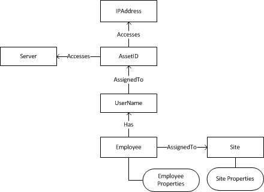
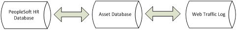
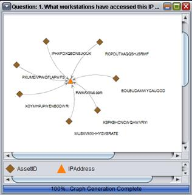

SEMOSS is a data-driven application that enables users to explore relationships and connections in an interactive format through intermediate conduits, i.e. transitive relationships. This document provides general usage instructions and guidance in deployment of the open source components of SEMOSS, in contrast to the developer guide, which provides instructions and guidance in terms of development "on top of" the tool.
This is the area where the active database is selected. The map sheet contains indexes to the available databases. The map sheet is essentially an index of all of the data and information that is available within the application (more instructions on loading databases and the map sheet are contained in Section 2: Loading a Database).
Figure 1.1.1
This is where you select a question and visualization you would like to create.
Figure 1.1.2
Sometimes a question (SPARQL query) requires an input parameter (such as IP Address); in this case a drop-down box will appear allowing the user to select the appropriate constraint. Additional information is deferred to the section on writing SPARQL queries.
Figure 1.1.3
This is an example of a 3 coordinate scatterplot vizualization. Hover over different bubbles to see the exact values that are being mapped.
Figure 1.1.4
This feature creates a table of all of the triples that are currently being used to display the graph.

Figure 1.1.5
This feature allows the user to connect to various upstream and downstream nodes that are connected to this particular instance. This will connect only the selected instance to its respective node instances.
This will connect all nodes of the same type to their respective node instances.
Figure 1.1.6
Figure 1.1.7
This is the set of steps that must be completed in order to create a new database engine and to load new data to the engine from Excel. Note that some of these steps may be done simultaneously, but all of the steps must be completed to create a fully functional engine.
There are other ways to create an engine and connect it to a data store, but this is the easiest way, assuming that the data is not already structured and formatted.
A tutorial video can be accessed at this link depicting how to create a new database engine:here.
The creation of a metamodel involves the construction of concepts (data) and their relationships (how data pieces relate to each other) and consequently provides analysts with a framework through which to explore the database and identify meaningful insights.
Usually, the metamodel is displayed as a map, as shown below for our security database in Figure 2.1.1.
Development of the metamodel is one of the most important and complex tasks that needs to be completed in order to be able to efficiently and effectively extract data from the engine. If the metamodel is not thorough, straightforward, and comprehensive, it will be very difficult to extract insights from any set of data. The most important paradigm to consider is that the metamodel should be constructed based on the fundamental relationships between the data, as opposed to a structure that is based on answering specific, known, questions from the data.
This allows the database to be queried based on prospective insights (as opposed to modifying the database to allow for this to happen).
Figure 2.1.1 below contains the base metamodel for our sample security database. The metamodel is constructed such that each of the node types and its relationships with other node types is represented by boxes and lines.
Figure 2.1.1 Security Database Model
Note: This section only applies if loading from an Excel loading sheet.
Once the metamodel is created, the base objects and relationships must be loaded into the RDF map sheet, named in the initial open-source release RDF_Map.prop. This step ensures that the data loads successfully and correctly aligns with the previously designed metamodel.
Note that all components are case sensitive. Therefore case must be consistent across all instances for matches to work correctly.
Base Objects
Here all of the base objects are added (i.e. the individual nodes in the metamodel that represent a node type within SEMOSS).
First, Navigate to the ##Base Objects## Section of the map sheet.
Then, for each new base object (e.g. type AssetID) enter the name, tab over, and enter the URI for the base object. The base objects for the security database (based on the metamodel identified above) would be:
##Base Objects##
AssetID http://Sdb.com/ontologies/Concept/AssetID
IPAddress http://Sdb.com/ontologies/Concept/IPAddress
UserName http://Sdb.com/ontologies/Concept/UserName
Employee http://Sdb.com/ontologies/Concept/Employee
Server http://Sdb.com/ontologies/Concept/Server
Site http://Sdb.com/ontologies/Concept/Site
Base Relations
Here the relationships that exist in the metamodel are added.
First, navigate to the ##Base Predicates## Section of the prop sheet.
Then, for each predicate (e.g. UserName_AssignedTo_AssetID) enter the name, tab over, and enter the URI for the relation.
The base objects for the security database (based on the metamodel identified above) would be:
##Base Predicates##
AssetID_Accesses_IPAddress http://Sdb.com/ontologies/Relation/Accesses
UserName_AssignedTo_AssetID http://Sdb.com/ontologies/Relation/AssignedTo
Employee_Has_UserName http://Sdb.com/ontologies/Relation/Has
Employee http://Sdb.com/ontologies/Concept/Employee
Employee_AssignedTo_Site http://Sdb.com/ontologies/Relation/AssignedTo
AssetID_Accesses_Server http://Sdb.com/ontologies/Relation/Accesses
Base Relationships
For each of the new node types and verbs, the base relationship is added to denote what type of object it is. For this first component, BaseMetaRelationships, all of the nodes that are of type concept (i.e. a node) are added. The structure is such that the node types in question (http://Sdb.com/ ontologies/ Concept/ IPAddress) are first, the standards-based predicate (http://www.w3.org/2000/01/rdf-schema#subClassOf) to denote the subclass is second, and the class (http://Sdb.com/ontologies/Concept) is the final component.
The same task is then completed for BaseMetaProperties, thus, each of the new relationships is loaded into the prop sheets. The structure is such that the node types in question (http://Sdb.com/ ontologies/ Relation/ AssignedTo) are first, the standards-based predicate (http://www.w3.org/2000/01/ rdf-schema#subPropertyOf) to denote the subclass is second, and the property (http://Sdb.com/ontologies/Relation) is the final component.
Setting the Engine
The final task that needs to be completed is the engine setup. Completion of this step requires a decision to be made in identification of the engine to be used and creation of the questions sheet; explanation of this process is deferred to their respective process step sections.
The code that needs to be added simply specifies the engine and database locations that are used to setup the database to be shown, so once decided, this can be added.
At the top of the prop sheet, modify it such that the engine and locations are selected. Consider this example for the security database. The first component specifies the databases that are loaded; multiple databases can be loaded and are delimited by semicolons.
The second component is the engine used to read the database, the third is the prop sheet location (more on the prop sheet in future steps), and the final sheet is the questions sheet.
ENGINES Security
Security prerna.rdf.engine.impl.BigDataEngine
Security_PROP db/demo/Security.properties
Security_DREAMER questions/Security_Questions.properties
Other Functionalities (Optional)
Other functionalities in the prop sheet can be added, included entering default colors and shapes for nodes. The base colors for the security database are entered as below:
#Shape maps
Site_SHAPE SQUARE
IPAddress_SHAPE TRIANGLE
UserName_SHAPE HEXAGON
AssetID_SHAPE DIAMOND
Employee_SHAPE CIRCLE
#Shape Colors
Site_COLOR BLUE
IPAddress_COLOR ORANGE
UserName_COLOR RED
AssetID_COLOR BROWN
Employee_COLOR GREEN
Selecting the engine defines the process through which the database is read into SEMOSS. This manual documents the use of the Big Data Engine, which provides the added functionality of converting Excel-based inputs into the database.
The loading sheets are setup such that there is an introductory loader tab, and a tab that contains an individual set of triples (e.g. all of the AssetID to IP Address relationships).
Loader Tab
The Loader tab essentially contains the name of the sheets that are read into the database. The name of the tab must be "Loader", and adjacent in column B to each of the tabs that are loaded should be the text "Usual."
Cell A1 should contain the text "SheetName" and Cell B1 must contain the text "Type."
The tab should be constructed as follows (example for the security database):

Figure 2.3.1 Loader Tab
Relation Tabs: Loading Triples
The other tabs should individually contain specific information surrounding an individual triple store that is to be loaded into the database. For example, . Cell A1 should contain the text "Relation", Cell A2 should contain the predicate (AssignedTo in this case), Cell B1 should contain the first node type (e.g. UserName), and cell C1 should contain the second node type (e.g. AssetID).
Column B should contain the actual first node instances, and column C should contain the second node instances. Properties on the edges (e.g. not triples, but data that may be relevant as a property such as a cost) can be attached in adjacent columns. Note that the property is not added to the node, but rather, the edge. To add properties to nodes a separate type of sheet is required (as documented below). Properties do not need to be added in the prop sheet, but are more difficult to visualize and query (example shown in figure 2.3.2 for the security database).

Figure 2.3.2 Sample Triple Loading Sheet
Node Property Tabs: Loading Properties
In the case where a property is desired to be added onto a node as opposed to a node edge (as above), a separate tab is necessary to be created to show this information. The structure of the sheet is displayed below for the Site property sheet for the security database, where city and state are denoted as properties of an individual site name.

Figure 2.3.3 Sample Property Loading Sheet
Once the excel files are generated, the database needs to be created.
There are two options to create a database: using the user interface import functionality or using the POIReader java file (POIReader is explained in the developer guide). The user interface is somewhat more intuitive, and does not require manual modification of the java code. However, it is not as efficient in processing multiple workbooks or debugging potential loading sheet data issues.
When updating a database (i.e. modifying the data in a current data), the best mechanism to ensure that duplicates do not exist is to delete the old .jnl file and then reload all of the new loading sheets from the workspace. This process tends to lend itself better to POIReader than the UI update.
UI Import
The user interface on the DB Modification Tab provides the capability to generate a new database engine without having to process through code. However, it is difficult to debug loading sheets with errors in the UI Import, and does not streamline the import of multiple files simultaneously.
Within the user interface import, there are two options: add to existing database, and create a new database.
Add to Existing Database
This option will load all triples specified in the Excel workbook on top of an already running database. Nothing will be overwritten in the previously existing database. If an exact triple specified in the workbook already exists in the database, the triple will remain but will not be duplicated (in this instance, , and all must match).
The database to be augmented must be selected in the database selection main tab on the left.
Create New Database
This option will create a completely new database and automatically have it populated on the left panel. The name of the new database cannot contain any spaces. All objects types and predicate types must be contained in the Base Objects and Base Predicates of the map file. The map file cannot be open when the import is running.
The files that are created (Assuming that the inputted name is "NewDBName"):
In addition, the map sheet is edited directly in the project folder to contain the new databases such that when the new db is created, it will appear in the navigation menu.
SPARQL is the query language used to query different databases within SEMOSS. Querying in SPARQL is a means of retrieving or creating meaningful data from an RDF triple store.
This document does not provide in-depth guidance in generating SPARQL queries, for additional guidance, it is suggested to purchase Learning SPRAQL by Bob DuCharme. More information can be found here, and the book can be purchased on Amazon here. More information can be found here.
In the semantics-based RDF ontology, this high-level framework provides the context through which data is structured. The Resource Description Framework (RDF) is a data model for encoding, gathering, and representing information about resources. Elements in RDF are stored as Uniform Resource Identifiers (URIs) and are always part of a triple. Constructed like a sentence (with a subject, predicate, and object) the triple structure is relational in form. A triple is defined as where "< >" denotes a URI. For example, an Employee has a UserName (constructed as . These categories (e.g. Employee) are called types, which contain specific instances (e.g. John Smith). Thus, John Smith has J_Smith, or, < John Smith > < John Smith:J_Smith > < J_Smith >.
There are multiple types of queries available to SPARQL, however only the SELECT (which results in grids) and CONSTRUCT (which results in graphs) queries are used.
A query has three major parts: The Query Type (SELECT or CONSTRUCT), the return variables (what is to be returned from the query), and the pattern that the triples must follow, in other words as structured:

To query the database it is important to note the URI (Uniform Resource Index) of the particular types(s) that are to be queried. The query below is a simple query for the Security database, which traverses from the Asset ID to IP Address, based on a specified IP Address. This query would be used to identify what assets (computers) have visited a particular website, in identification of the cause of a particular virus. Additionally, the user can then extend from that particular object (traverse freely) through to other nodes to identify additional insights. This is performed by right clicking on the node in question and traversing to the desired additional node.
Here, a CONSTRUCT query is used because a graph is generated. Second, since only one relationship is traversed, from AccessID to IP Address, the result set is:
{?AssetID ?Accesses ?IPAddress}
Next, the patterns to be traversed are added. First, the components the user will select are added (denoted by two variables encapsulated by '@' signs:
{{?IPAddress "@IPAddress-IPAddress@";}
Finally, the core relationship is added:
{?AssetID ?Accesses ?IPAddress}}
Thus, the completed query is generated and loaded into the question sheet:
CONSTRUCT {?AssetID ?Accesses ?IPAddress} WHERE {{?IPAddress "@IPAddress-IPAddress@";}{?IPAddress ;}{?Accesses ;}{?AssetID ;}{?AssetID ?Accesses ?IPAddress}}
Again, this document does not include extensive SPARQL instructions or details.
Additional documentation surrounding writing SPARQL queries can be found at SEMOSS.org and through Bob DuCharme's book, Learning SPARQL.
The Security use-case example is meant to show how a network security analyst can identify meaningful insights surrounding a potential network infiltration by a malicious host. The scenario envisioned is that an employee likely visited a malicious website and that site infected the computer, and then a number of servers that support the enterprise.
The security analyst is interested in identifying the employee that went to the site, and identifying the potential impact to the enterprise of the malicious traffic.
The team has also generated a Youtube video discussing the concept (4.1) surrounding the security database as well as the actual use-case of traversing through the videos in the application.
Like most enterprises this data is located in disparate, disconnected data sets. Likely, there is a PeopleSoft Oracle solution which manages HR information for the company, an active-directory based asset database that contains all of the assets connected to the enterprise, and a web traffic log provided by the network support team. These databases are likely disconnected, and on-face, do not communicate with each other.
In order to identify information about the security breach, however, these databases will need to communicate to connect information surrounding the attack.
Figure 4.1.1 Disparate Databases
The SEMOSS team has extracted specific, relevant components from these databases and generated a metamodel (more information surrounding metamodels can be found in section 2.1).
However, this data is unfiltered and it must be processed and connected in SEMOSS for actionable insights to be generated. The Security metamodel is located in figure 4.1.2 below.
Essentially, the three disparate databases are connected through the metamodel and can be combined to generate insights surrounding the attack that occurred.

Figure 4.1.2 Security Database Metamodel
Traversing through the database is relatively straightforward. Let's imagine that the IP Address is known (for our demo we have used IAmAVirus.Com), and we want to identify insights surrounding what employees have accessed this host.
First select the (1) WebLog database (since the initial connection surrounds web traffic), then select the (2) Security Perspective, and then select a (3) Specific Question. In this case, the analyst is interested in identifying what workstations (assets) have accessed the particular IP Address.

Figure 4.1.2 Security Database Metamodel
Once the query is created, the available parameters are selected, in this case the IP Address, and then the create button is pressed to generate the initial graph (figure 4.2.2 below).
Figure 4.2.2 Workstation IP Address Query
Once the query is created, the available parameters are selected, in this case the IP Address, and then the create buttonNow, all of the workstation assets that have accessed that particular IP address have been identified.
Next, the analyst might be interested in the usernames associated with those particular asset identifiers. By first selecting the database to traverse to (e.g. the Asset Database) and then by right clicking on the individual node in question, the user can traverse to another node. In this case, the analyst will traverse through to username (figure 4.2.4 below).

Next, the user may be interested in identifying the names of the employees involved, so by switching to the PeopleSoft database perspective the analyst can traverse through to this question.
Next, the user may be interested in where these individuals are located (perhaps the security breach has occurred at a specific location), so the user can traverse through to these locations to identify the specific area where the breach has occurred (as in figure 4.2.5 below).

Figure 4.2.5 Security Database Metamodel
Finally, the analyst may be interested in what servers those assets have accessed, so by switching back to the traffic log, the user can traverse through to server. In addition, highlight adjacent functionality can be used to identify the specific nodes that a particular instance touches;
in this case, it appears as if a particular asset has touched an extraordinary amount of servers; possibly suggesting that that particular asset has infected the entire enterprise (as below).

Figure 4.2.6: Traverse Freely to identify malicuous host and highlight adjacent.
Through this analysis, we have identified that this particular user has likely gone to a malicious website, identified the party respinsible, as well as all of the servers this particular user has touched to identify what actions need to be taken to reduce the impact to the enterprise. In addition, this analysis has been performed by merging three separate, disparate databases that ordinarily would not communicate with each other.
Additional information surrounding SEMOSS is located here: